Meddbase is designed to handle a wide range of referral types, making it a versatile solution for managing patient care pathways. Whether your organisation needs to receive external referrals, send referrals to external providers, or manage internal referrals within your practice, Meddbase accommodates these processes seamlessly.
Internal referrals allow clinicians to refer patients within the same organisation to specialists or other departments for further assessment or treatment.
The purpose of this article is to explain the configuration required to conduct internal referrals in a chamber and how to manage incoming referrals.
Internal referrals require two work types in Meddbase—Outbound Referral and Incoming Referral. When a user refers a patient internally, they create an Outbound Referral. This then generates an Incoming Referral work item for the receiving clinician or department.
To ensure Outbound referrals are configured correctly, the Outbound Referrals work type must be configured. To do this go to Admin > Work > Outbound Referrals.
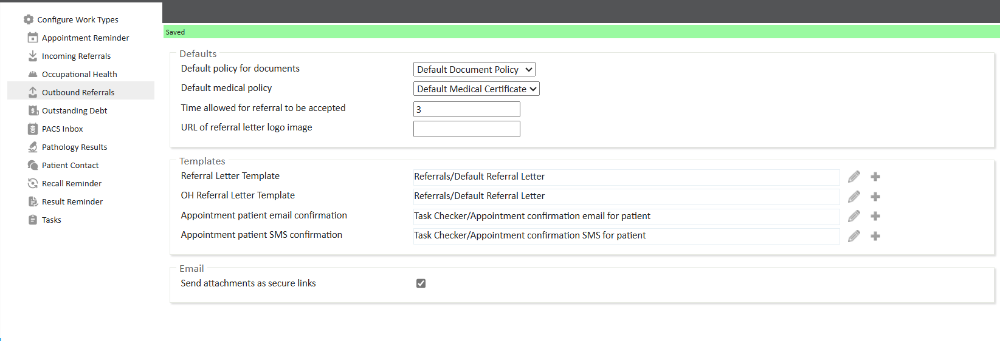
In this area, configure how you expect outbound referrals to behave and provide default templates.
For Incoming Referrals, follow a similar process to ensure they are configured correctly. To configure Incoming Referrals:
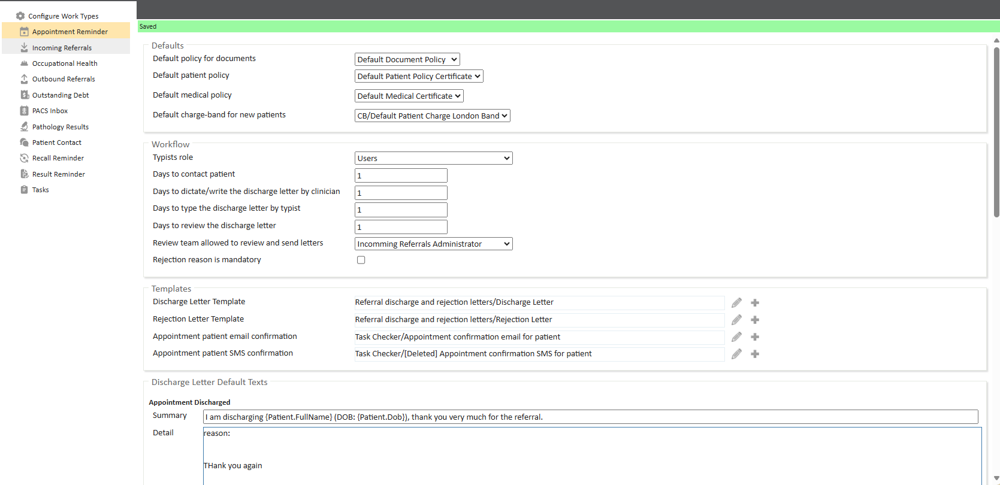
The chamber company must be configured to allow referrals.
To do this, go to Company > Find Company> Chamber Company.
Ensure the option to be referrable is enabled.
The chamber company must also have at least one specialism set, which defines the type of referrals it can accept.
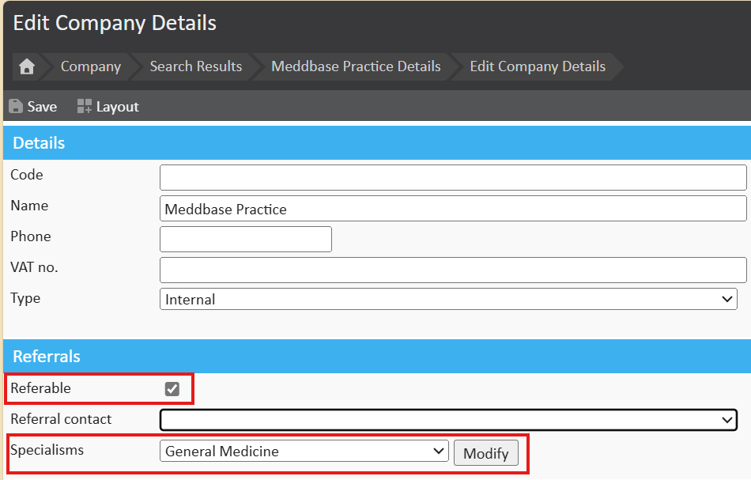
Clinicians or users who will be receiving referrals must have a specialism set on their record.
To configure this, navigate to Clinician> Find Clinician> Clinician Record and assign a relevant specialism.
This ensures referrals are directed to the appropriate specialist within the system.
Any clinical user within the organisation can make a referral using the referral pathway tools. The referral will be initiated from within the patient record either during the consultation (By clicking the ‘Refer Patient’ action button at the bottom of a consultation form) or standalone (By selecting ‘Refer Patient’ from the patient home page).
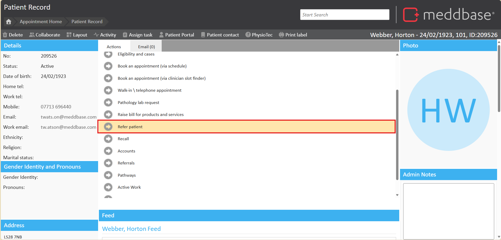
Once the refer button has been clicked, a work item will be created in the ‘Outbound Referrals’ list found to the left of the start page. If at any point you close the referral you may find the work item here. If you decide you no longer require the referral, hit Cancel Referral. If you simply close the window the referral will remain in the current state.
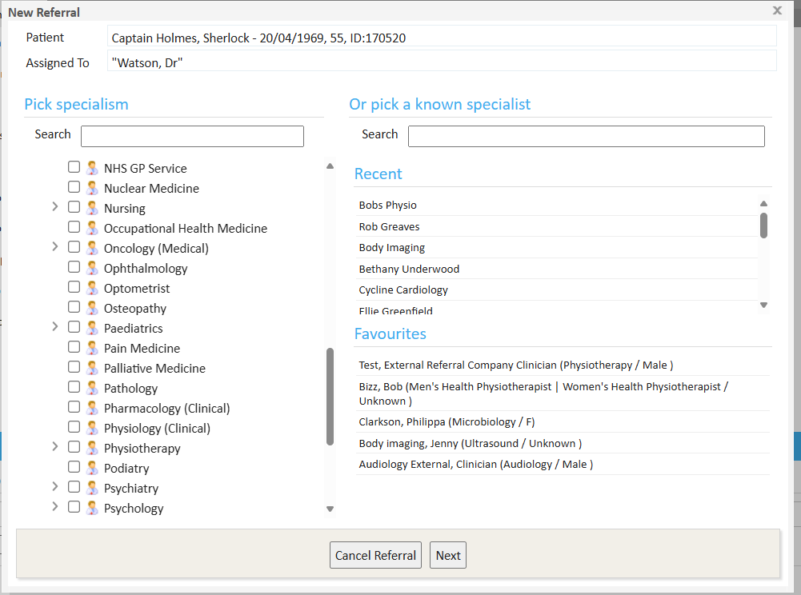
When referring the patient, the first page you will be presented with is the specialism picker. From this page we can follow a number of routes.
Referring Based on Specialism (No Known Clinician)
On the left-hand side, you can search the entire catalogue of companies by selecting the required specialism.
Once you've ticked the relevant specialism, click Next to continue with the referral.
This process is useful when you don’t know the specific clinician but need to refer to a specialist within that specialism.

Referring to a Known Specialist
If you already know the clinician you want to refer to, use the ‘Pick a known specialist’ search option.
This will allow you to search for the clinician by name, streamlining the process if they are already set up as a record in the system.
Note: When the clinician is a Meddbase user, their name will appear with an icon , indicating they will receive the referral directly within their own Meddbase system.
If the clinician is not a Meddbase user, they will appear with a different icon , and the referral will be sent via email or print.
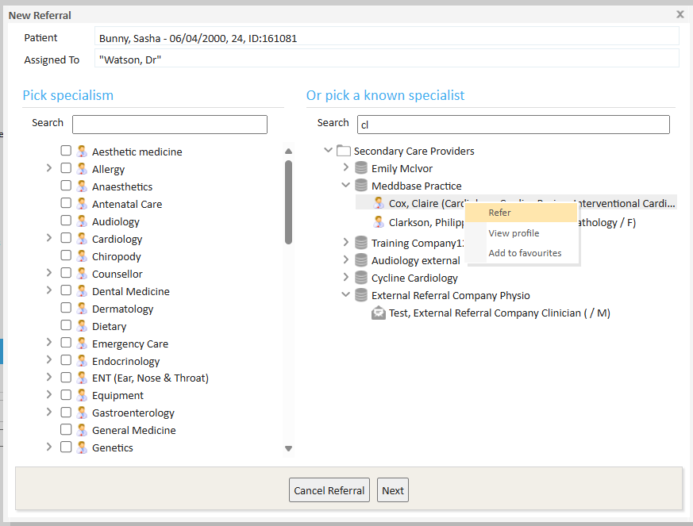
After you have selected the desired route, you will be presented with the next stage of writing the referral letter. This letter can be any length. For example, it could be as simple as asking for an appointment date to drafting a complex history of the case. You will also see options to the right. If you are using Meddbase to run primary care appointments, you can select parts of the medical record to be included in your referral. For example, the past medical history or prescription history, and this will be inserted directly into the document.
You will notice two options at the bottom of the referral cover letter page.
Click next to continue the referral.
The next stage of the referral allows you to attach document to the referral. Documents displayed in the tree are currently attached to the patient record. Select a document to either preview it or attach it to the referral. Documents that will be sent with the referral are displayed on the right. To remove a document from the referral simply click on it from the list on the right.
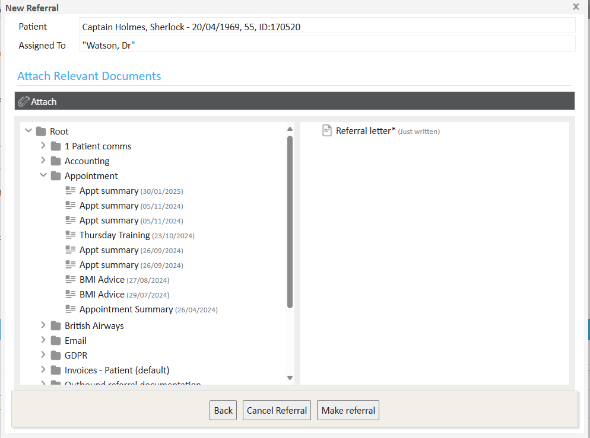
Depending on the initial route chosen, after clicking Make Referral you will be presented with a new screen. If you picked a specialist, you will jump to the next step where the referral has been made and the chosen user will receive a work item in the Incoming referrals work inbox.
With the specialisms selected, a referral letter created and any other appropriate documents included, proceed to send the referral.
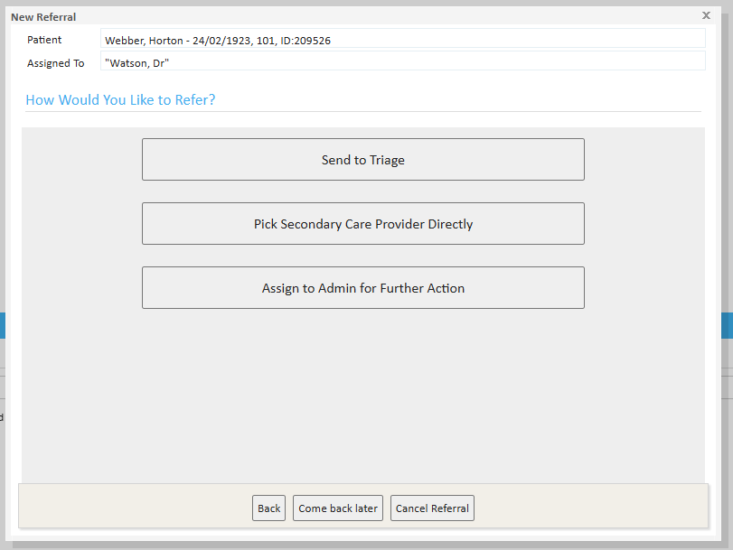
The referring user will be presented with options for referring:
Select the provider and click the Refer button to complete the referral.
An incoming referral that has been made by a user to the triage team, or a specific user, will create a new work item in the Incoming Referrals inbox.
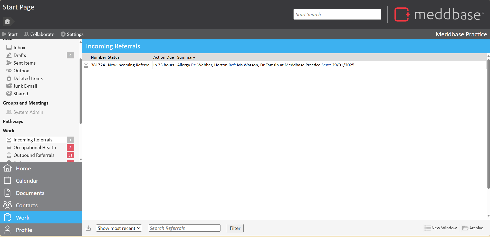
You can also see a filter button. You can use this filter to only show specific types of referrals in the system. For example, only show new referrals. Next to the filer button is a search box. Here you can search for any text in the Summary filed – for example a patient name or specialism.
To open a referral simply click on the work item and a window will open. When a new referral arrives, you should pick one of the following 5 actions.
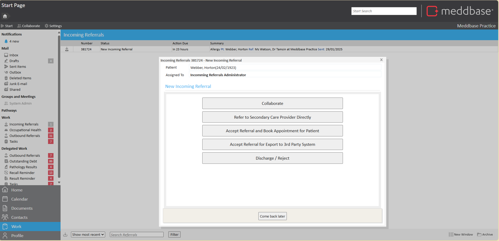
Start a collaboration with the referrer and the triage centre prior to accepting or rejecting the referral. You can added comments to the chat feed that can be seen by the doctor. Using this page to see a copy of the referral or ask further questions. if you open the collaborate option, you can export the letter and other attached files allowing you to see the referral before you decide what to do with it. You may also message back the referrer using the instant message feature built into the collaborations.
Refer the patient onwards to another provider. This allows you to forward the referral into another specialist. When you click this option you will be presented with a list of places you can forward your referral into. If you do not see a specialist in this list, you will see at the bottom of the page and option:
Click on the green text and you will be presented with other specialist’s setup in your local database that you can refer to using the email / print route. You will now be presented with a list of specialists that are local to your database. Select the specialist and select the refer option. You will now be presented with a number of option as per the screen shot below.
Select Email Letter to email the referral to the selected specialist. A new email windows will open. You can see from the image below, the email address of the specialist on file has been inserted into the ‘To:’ field.
Add any additional content or change the subject and hit send.
If accepted, Meddbase will automatically suggest appointment times based on the consultants availability. This method assumes you are using Meddbase to make the appointment.
Accept and download a zip file containing the referral information. This method assumes you are using a 3rd party system to book the patient appointment.
This option allows you to reject or discharge the referral back to the user. You will be prompted for a reason and this will be sent back to the referrer.
Referrals should be archived once they have been completed. You may only archive a referral once it is in a completed state – i.e. the referral pathway is complete and it is in the Discharged / Rejected state.
If you accept a referral, you must discharge the referral in order to archive it. This means if someone has referred a patient to you, you must send some kind of response back to the referrer either in the form or a doctors discharge letter or an acknowledgement note. The process here is up to you.
Typically, if you are accepting a referral and exporting it to manage outside of Meddbase, (option 4 above) you may want to discharge the patient once you have accepted it. In this case, you would simply tell the person that made the referral you are dealing with it and pass on any additional information that may be helpful. If you are accepting the referral and making a booking, (option 3 above) using the referral booking tool, you should leave the referral open until the doctor has seen the patient as the doctors notes from the appointment will form the discharge letter and the process will be close as part of the referral pathway.
To see all referrals that can be archived in the Incoming Referrals work inbox, simply use the filter option Discharged / Rejected and you will see all the referrals that are ready to be discharged. Referrals not falling into this category must be dealt with before they can be discharged.
By configuring your work item notification settings, you are allowing Meddbase to email you or SMS you based on the type of work item you receive. The email or SMS you receive will simply tell you a new work item and type has been sent, but will not include any sensitive patient data.
You may globally configure your work items settings for all user, or simply set it up on a user by user basis.
To configure your own settings, login to Meddbase and click settings and then Preferences
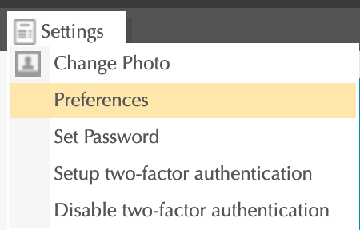
This will open your preferences where you can set your own notifications. Scroll down to the notification section.
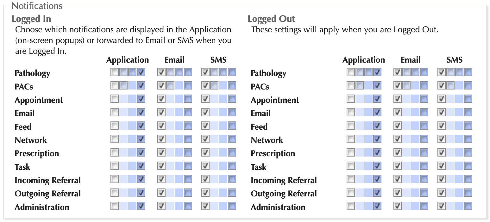
If you would like to receive an email when you are logged out of Meddbase for all incoming referrals, look at the section on the right called Logged Out and under Incoming Referral tick the dark blue box which if you hover over will say all
Click save at the bottom. You will now receive an email for every referral you receive when you are logged out. If you also want to receive an email when you are logged in, you can click the same box under the section Logged In.